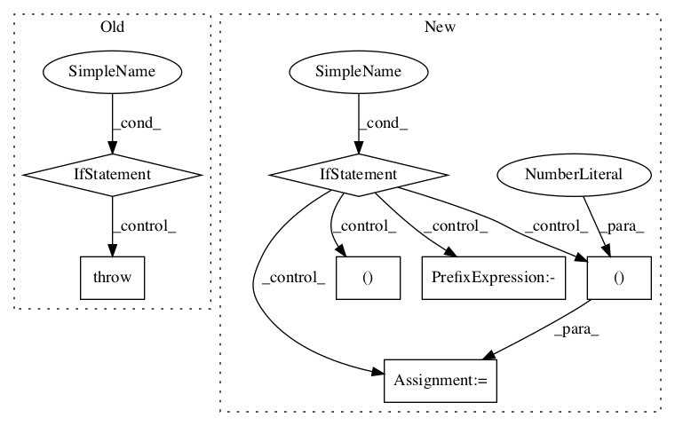

36bf1cd036d852d10b189727d43fee6ee0b6c66c,geomstats/geometry/special_euclidean.py,SpecialEuclidean,inverse,#SpecialEuclidean#Any#Any#,308

Before Change
inverse_point = gs.concatenate(
[inverse_rotation, inverse_translation], axis=1)
elif point_type == "matrix":
raise NotImplementedError()
inverse_point = self.regularize(inverse_point, point_type=point_type)
return inverse_point
After Change
inverse_point = gs.concatenate(
[inverse_rotation, inverse_translation], axis=1)
elif point_type == "matrix":
inverse_point = gs.empty_like(point)
inverse_point[:, :self.n, :self.n] = gs.transpose(
point[:, :self.n, :self.n], axes=(0, 2, 1))
inverse_point[:, :self.n, self.n:] = gs.matmul(
inverse_point[:, :self.n, :self.n],
- point[:, :self.n, self.n:])
inverse_point[:, self.n:, :] = point[:, self.n:, :]
inverse_point = self.regularize(inverse_point, point_type=point_type)
return inverse_point
In pattern: SUPERPATTERN
Frequency: 3
Non-data size: 7
Instances
Project Name: geomstats/geomstats
Commit Name: 36bf1cd036d852d10b189727d43fee6ee0b6c66c
Time:
Author: null
File Name: geomstats/geometry/special_euclidean.py
Class Name: SpecialEuclidean
Method Name: inverse
Project Name: geomstats/geomstats
Commit Name: 36bf1cd036d852d10b189727d43fee6ee0b6c66c
Time:
Author: null
File Name: geomstats/geometry/special_euclidean.py
Class Name: SpecialEuclidean
Method Name: random_uniform
Project Name: tensorflow/agents
Commit Name: cf51c81221fa9dcb087c8dfe48e313c71bd3dd83
Time:
Author: null
File Name: tf_agents/keras_layers/bias_layer.py
Class Name: BiasLayer
Method Name: build